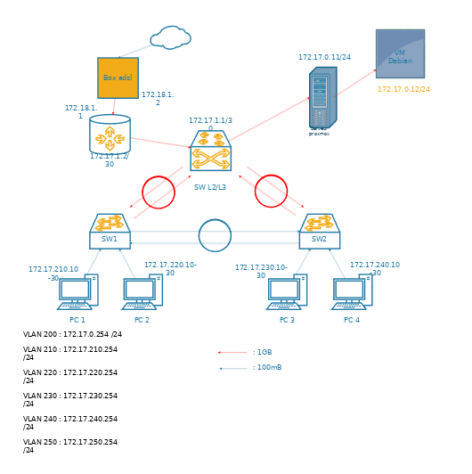
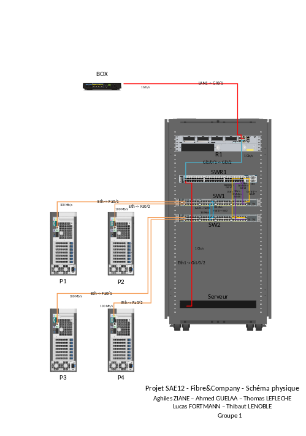

1Description & Objectif
Dans le cadre du développement de la société Fibre&Company, l'objectif de ce projet était de faire évoluer un réseau informatique basique vers une architecture paramétrable, sécurisée et évolutive. Il a fallu implémenter des commutateurs et routeurs Cisco, ainsi qu'un serveur virtuel Debian pour assurer les services d'infrastructure.
2Apprentissages Critiques
- AC 1 : Comprendre l'architecture et les fondements des systèmes numériques, les principes du codage de l'information.
- AC 2 : Configurer les fonctions de base du réseau local.
3Tâches réalisées & Preuves
Conception du plan d'adressage IP, configuration des VLANs par service (200 à 250), mise en place du routage inter-VLANs et déploiement des services réseaux (DHCP, DNS, SMB, Apache2) sur un serveur Debian partitionné.


4Autoévaluation & Réflexion
J'ai appris à concevoir un réseau complet de bout en bout : calcul de sous-réseaux pour 150 machines par VLAN, protocoles avancés (RSTP, agrégation de liens), et administration de serveurs Linux en CLI (partitionnement Ext4/XFS, création massive d'utilisateurs, sécurisation SSH selon les recommandations ANSSI).
| Difficultés rencontrées | Solutions apportées |
|---|---|
#01
Le cahier des charges interdisait formellement les boucles et scripts bash avec useradd pour créer les comptes utilisateurs de l'entreprise.
|
#01
Utilisation de la commande newusers associée à pwgen pour générer automatiquement les comptes et mots de passe, sans aucune boucle.
|
| #02 Configurer le routage entre le routeur LAN/WAN via un lien en /30 et le switch cœur de réseau demandait une grande rigueur dans la table de routage. | #02 Tests méthodiques avec Iperf3 mesurant les débits réels TCP et UDP, prouvant l'efficacité de l'agrégation de liens et validant chaque entrée de la table de routage. |